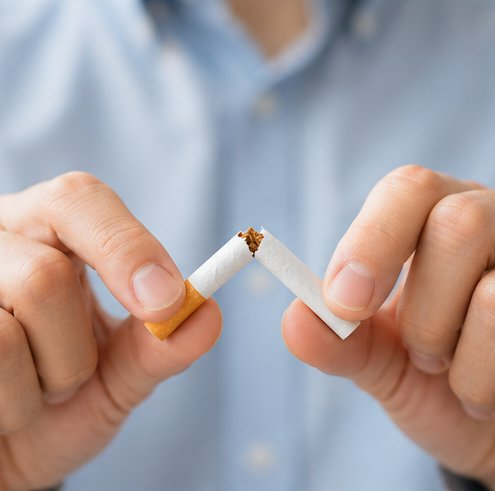
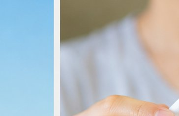

無料シミュレーター
喫煙本数を入力するだけで、50年先の節約額・健康回復・将来資産をグラフで可視化。段階的減煙対応・医学的指標・禁煙外来比較で禁煙継続をトータルサポート。

機能説明
入力するだけで禁煙のメリットを多角的に数値化。継続のモチベーションを科学的に高めます。
禁煙後の節約額を最大50年分グラフ化。複数の時間軸で成果を可視化します。
たばこ代だけでなく医療費削減・生命保険非喫煙者割引まで含めた総節約額を計算。
ブリンクマン指数など医学的指標と、禁煙後20分〜15年の健康回復タイムラインを表示。
節約額を新NISAで積み立てた場合の将来資産を自動試算。老後資金への貢献度も確認。
医学的な喫煙リスク指標「ブリンクマン指数」をリアルタイム計算。健康リスクを客観視。
計算結果をX（Twitter）・LINEで一発シェア。OGP対応で見やすい画像で共有できます。
禁煙開始日から秒単位でカウント。節約額をリアルタイム表示してモチベーションを維持。
保険適用の禁煙外来費用と節約額を比較。何ヶ月で元が取れるか一目でわかります。
使い方
登録不要・完全無料。スマホでも30秒でシミュレーション完了。
1日の本数・タバコ代・喫煙年数を入力。段階的減煙の設定も可能です。

「シミュレーション開始」ボタンを押すだけ。50年分のグラフが即座に生成されます。
節約額・健康回復・将来資産を確認。結果をSNSで家族・友人に共有できます。
シミュレーション実例
1日20本・1箱580円・喫煙歴15年の場合のシミュレーション例です。
健康回復
禁煙後の体の変化は驚くほど早く始まります。科学的データに基づいたタイムラインを確認できます。
心拍数・血圧が正常値に近づき始める
血液中の一酸化炭素濃度が正常レベルに回復
血液循環が改善し、肺機能が30%向上
心臓病リスクが喫煙者の半分に低下
脳卒中リスクが非喫煙者と同レベルに
心臓病リスクが非喫煙者とほぼ同レベルに
医学的指標
医療現場で使われる客観的な喫煙リスク指標を、本ツールで自動計算します。
ブリンクマン指数は医学的な喫煙リスクの目安です。
200以上：肺がん・COPD・喉頭がんのリスク上昇
400以上：COPD（慢性閉塞性肺疾患）リスクが顕著に増加
600以上：肺がん・喉頭がんの高リスク
本ツールではシミュレーション時にブリンクマン指数を自動計算し、あなたの喫煙リスクを数値で示します。
費用比較
禁煙方法ごとの費用・成功率・メリットを比較して、最適な選択をサポートします。
費用はかからないが意志力だけでの成功は難しい。失敗しても繰り返し挑戦できる。
5回通院で約1.5万円。月の節約額で2ヶ月以内に元が取れる。医師のサポートで高成功率。
節約額・健康効果を数値化してモチベーション維持。禁煙カウンターで達成感を可視化。
活用シーン
節約・健康・家族・老後資金など、さまざまなモチベーションで活用されています。
月・年・30年後の節約額をグラフで可視化。禁煙の経済的メリットをひと目で確認できます。
ブリンクマン指数・健康回復タイムラインで体への影響を科学的に把握できます。
具体的な数字と健康データで禁煙を後押し。結果をSNSや印刷で共有できます。
節約額を新NISAで運用した場合の50年後の試算。禁煙が老後資産形成に直結することを実感できます。
段階的な本数削減プランに対応。無理なく禁煙ゴールに近づけるステップアップ機能を搭載。
外来費用と節約額を比較して費用対効果を試算。「何ヶ月で元が取れるか」が一目でわかります。
禁煙開始日を入力すると、達成日数・時間・分・秒と節約額をリアルタイムカウントします。
よくある質問
今すぐはじめよう
禁煙成功に向けたすべてのサポート機能を一つのツールで提供します。